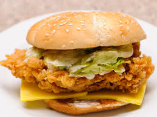

Recipes >> Fast Food Recipes > Masala Crispy Burger by Chef Gulzar Hussain
Masala Crispy Burger
| Prep Time | Cook Time | Prep Time |
|---|---|---|
| 1 Hour + 10 Mins | 25 - 30 Mins | As Desired |
it wont be wrong If we consider this crispy burger in most eaten fast food of
through out the world. Adult and kids all prefer this burger when go out for fast food.
Now you can prepare home-made masala crispy burger easily by this recipe and enjoy with dips.
Viewed: 21155
Source: Chef Gulzar Hussain Live@9 Masala
14 Ratings
Ingredients
- For Marination:
- Chicken breast 4 (boneless)
- Mustard powder ½ tsp
- Oyster sauce 2 tbsp
- Black pepper 1 tsp (crushed)
- Salt 1 tsp
- For batter:
- Flour 6 tbsp
- Corn flour 2 tbsp
- Baking soda 1tsp
- Egg 1
Buy Ingredients Now
Cooking Direction
- For Marination:
- Marinate the chicken breasts with oyster sauce, salt, black pepper and mustard.
- Let it marinate for 1/2 hour.
- In another bowl put batter ingredients except bread crumbs, mix thoroughly and make batter.
- Dip the chicken breasts in the prepared batter then coat by breadcrumbs and then deep fry until cooked.:
- Take bun cut between and spread mayonnaise on the buns.:
- Put a leaf of lettuce and fried chicken breast in bun and tomato close bun and serve.
0 Comments
Sort By